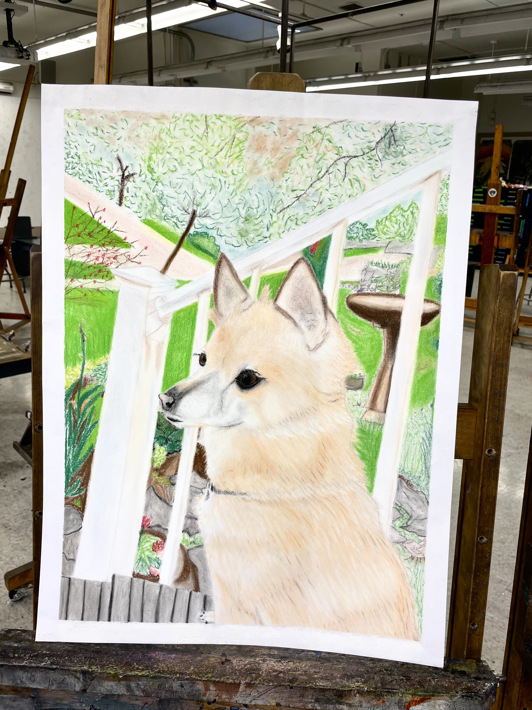
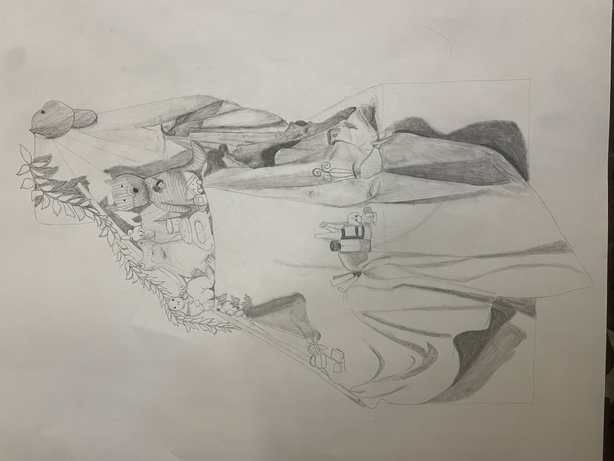

The gist of the story is that Earth is being majorly harmed by the presence of something unknown in space. Our protagonist Ryland Grace awakens from what seems to have been a long sleep in a spaceship where he is accompanied by two dead crew members. He has no memory of why he is there, where he is going, or who he even is at first. Then, slowly, as he gains his memories back he realizes that he has been sent on this mission to hopefully solve the problem of what is destroying Earth so he can save all of humanity before it’s too late. However; the discoveries he makes end up being impactful to more than just Earth.


